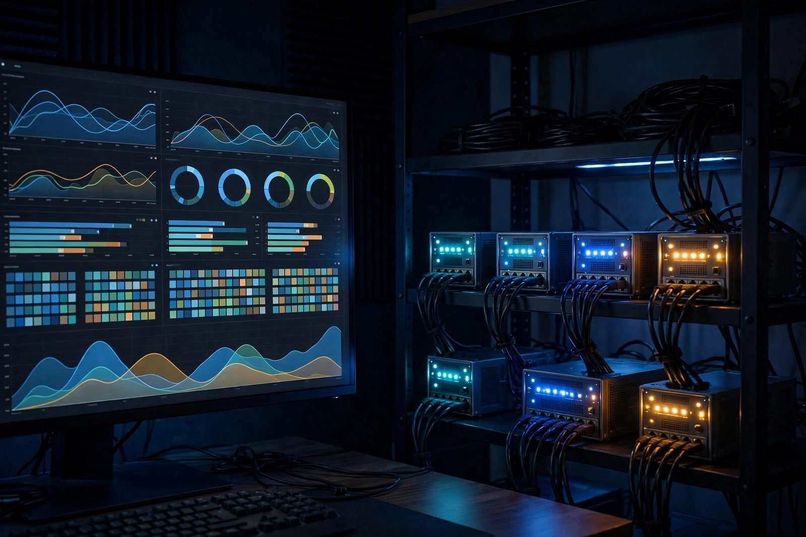

Kubernetes Infrastructure
Production-style 7-node Kubernetes cluster: Ubuntu Server VMs on bare-metal Proxmox hosts, one switch, one router, one wireless backhaul

Overview
This project is a self-designed, self-built Kubernetes homelab: seven Ubuntu Server virtual machines running on bare-metal Proxmox VE hosts (3 desktop PCs and 4 laptops), interconnected through a single managed switch, a dedicated router handling inter-VLAN routing and NAT, and a wireless radio providing backhaul for the laptop nodes. The goal was to replicate a production-style container orchestration environment entirely from consumer hardware, with no cloud, no rented rack space, and no managed services.
The cluster runs kubeadm-bootstrapped Kubernetes on Ubuntu Server VMs provisioned inside Proxmox, with Calico as the CNI for pod networking and network policy enforcement, MetalLB for LoadBalancer services without a cloud provider, Longhorn for distributed persistent storage across nodes, and a full observability stack built on Prometheus + Grafana + Loki. Deployments are automated through Bash scripts, with application manifests versioned in Git; full GitOps with ArgoCD is a planned next step.
Every component, from the physical cable runs and VLAN trunking to the Kubernetes RBAC policies and Grafana dashboards, was planned, configured, and documented by hand. The cluster provides DNS, ingress, and monitoring for the homelab, and hosts the observability stack plus selected services in production. Note that the control plane is a single node, so this is a production-style homelab rather than a highly available production cluster: there is no API endpoint redundancy.
Physical Topology
The entire infrastructure runs from a single physical location. Three desktop PCs serve as the primary compute and storage nodes, while four laptops act as lightweight worker nodes and provide redundancy. All wired nodes connect to a managed switch with 802.1Q VLAN trunking. The router handles inter-VLAN routing, DHCP reservation, and NAT to the public internet. Externally-facing services are published through Cloudflare Tunnel rather than inbound port forwards, so no ports are opened on the router (see the zero-trust build for the access design). A wireless radio bridges the laptop nodes into the cluster network over a dedicated 5 GHz backhaul link.
Virtualization and Cluster Topology
No Kubernetes node runs directly on the hardware. Each physical machine is a Proxmox VE 8.x host, and every Kubernetes node is an Ubuntu Server 24.04 virtual machine: 1 control plane plus 6 workers, for 7 nodes total. Each VM carries two virtual NICs, one on VLAN 20 (cluster traffic) and one on VLAN 30 (storage traffic). The diagram below shows the full stack, from bare-metal hosts to the nine hosted services.
Network Architecture
Network segmentation is enforced at the switch level using three VLANs. The router performs inter-VLAN routing with firewall rules restricting lateral movement between segments. This mirrors enterprise network design where management, application, and storage traffic are isolated to prevent blast radius expansion during a compromise.
| VLAN | ID | Subnet | Purpose |
|---|---|---|---|
| Management | 10 | 10.10.10.0/24 | SSH access, Proxmox UI, router admin, switch management, IPMI/BMC |
| Cluster | 20 | 10.20.20.0/24 | Kubernetes API server, pod-to-pod (Calico with BGP peering between nodes on the same VLAN), MetalLB external IPs |
| Storage | 30 | 10.30.30.0/24 | NFS mounts, ZFS snapshot sync, backup traffic; Longhorn replica I/O only with the Longhorn storage network feature configured |
Kubernetes Architecture
Tech Stack
| Layer | Technology | Role |
|---|---|---|
| Hardware | 3 × Desktop PC, 4 × Laptop | Physical hosts running Proxmox VE; the 7 K8s nodes are Ubuntu Server VMs on these hosts |
| Networking | Managed Switch (802.1Q), Router, 5 GHz Radio | VLAN segmentation, NAT, wireless mesh backhaul |
| Hypervisor | Proxmox VE 8.x | VM provisioning, snapshots, live migration |
| OS | Ubuntu Server 24.04 LTS | Minimal server images inside Proxmox VMs |
| Container Runtime | containerd | CRI-compliant runtime for Kubernetes |
| Orchestration | Kubernetes (kubeadm) | Cluster bootstrapping, upgrades, node management |
| CNI | Calico | Pod networking, BGP peering, NetworkPolicy enforcement |
| Load Balancer | MetalLB (L2 mode) | External IP allocation for LoadBalancer services without a cloud provider |
| Ingress | Nginx Ingress Controller | HTTP/HTTPS routing, TLS termination, path-based routing |
| Storage | Longhorn | Distributed block storage with 3x replication across nodes |
| TLS | Let’s Encrypt + cert-manager | Automated certificate provisioning and renewal |
| Monitoring | Prometheus + Node Exporter | Metrics collection from nodes, pods, and Kubernetes internals |
| Dashboards | Grafana | Visualization, alerting rules, and SLA tracking |
| Logging | Loki + Promtail | Centralized log aggregation and querying |
| Automation | Bash, Docker Compose | Cluster provisioning scripts, auxiliary service orchestration |
| DNS | Pi-hole + Unbound | Internal cluster DNS resolution and ad/threat blocking |
Build Process
Hardware Preparation & Network Wiring
Each desktop PC and laptop was prepared with a clean BIOS/UEFI configuration, boot order set to PXE/USB, and hardware diagnostics run to verify RAM, disk health, and thermal performance. Cat6 Ethernet cables were run from each desktop to the managed switch. The switch was configured with three VLANs (10, 20, 30) and trunk ports for the router uplink. The wireless radio was mounted and configured in bridge mode on VLAN 20 to extend the cluster network to the laptop nodes over 5 GHz.
# Switch VLAN configuration (CLI example)
enable
configure terminal
vlan 10
name MANAGEMENT
vlan 20
name CLUSTER
vlan 30
name STORAGE
# Trunk port to router
interface GigabitEthernet0/1
switchport mode trunk
switchport trunk allowed vlan 10,20,30
# Access ports for desktop nodes (VLAN 20)
interface range GigabitEthernet0/2 - 4
switchport mode access
switchport access vlan 20
# Trunk port to wireless radio
interface GigabitEthernet0/5
switchport mode trunk
switchport trunk allowed vlan 20Proxmox Installation & VM Provisioning
Proxmox VE 8.x was installed on each of the seven hosts (3 desktops and 4 laptops) as the base hypervisor. Ubuntu Server 24.04 LTS VMs were created on each node with resource allocations matched to the hardware. VMs were configured with two virtual NICs: one on VLAN 20 (cluster traffic) and one on VLAN 30 (storage traffic). Cloud-init templates were used to standardize hostname, SSH keys, and network configuration across all VMs.
# Create a cloud-init template VM on Proxmox
qm create 9000 --name ubuntu-cloud --memory 4096 --cores 2 \
--net0 virtio,bridge=vmbr0,tag=20 \
--net1 virtio,bridge=vmbr0,tag=30 \
--scsihw virtio-scsi-single
# Import Ubuntu cloud image
qm set 9000 --scsi0 local-lvm:0,import-from=/var/lib/vz/template/iso/ubuntu-24.04-server-cloudimg-amd64.img
qm set 9000 --ide2 local-lvm:cloudinit
qm set 9000 --boot order=scsi0
qm set 9000 --serial0 socket --vga serial0
# Configure cloud-init defaults
qm set 9000 --ciuser taki --cipassword changeme \
--sshkeys ~/.ssh/authorized_keys \
--ipconfig0 ip=dhcp \
--ipconfig1 ip=10.30.30.X/24,gw=10.30.30.1
# Clone template for each node (1 control plane + 6 workers)
for i in 1 2 3 4 5 6 7; do
qm clone 9000 10${i} --name k8s-node-${i} --full
qm start 10${i}
doneKubernetes Cluster Bootstrap with kubeadm
All nodes were prepared with the Kubernetes prerequisites: swap disabled, kernel modules
loaded (br_netfilter, overlay), sysctl parameters set for
IP forwarding, and containerd installed as the CRI runtime. The control plane was
initialized on PC-01, and worker nodes joined using the bootstrap token.
# Run on ALL nodes
cat <<EOF | sudo tee /etc/modules-load.d/k8s.conf
overlay
br_netfilter
EOF
sudo modprobe overlay && sudo modprobe br_netfilter
cat <<EOF | sudo tee /etc/sysctl.d/k8s.conf
net.bridge.bridge-nf-call-iptables = 1
net.bridge.bridge-nf-call-ip6tables = 1
net.ipv4.ip_forward = 1
EOF
sudo sysctl --system
sudo swapoff -a && sudo sed -i '/swap/d' /etc/fstab
# Install containerd
sudo apt install -y containerd
sudo mkdir -p /etc/containerd
containerd config default | sudo tee /etc/containerd/config.toml
sudo sed -i 's/SystemdCgroup = false/SystemdCgroup = true/' /etc/containerd/config.toml
sudo systemctl restart containerd
# Install kubeadm, kubelet, kubectl
sudo apt install -y apt-transport-https ca-certificates curl gpg
curl -fsSL https://pkgs.k8s.io/core:/stable:/v1.30/deb/Release.key | \
sudo gpg -dearmor -o /etc/apt/keyrings/kubernetes-apt-keyring.gpg
echo 'deb [signed-by=/etc/apt/keyrings/kubernetes-apt-keyring.gpg] https://pkgs.k8s.io/core:/stable:/v1.30/deb/ /' | \
sudo tee /etc/apt/sources.list.d/kubernetes.list
sudo apt update && sudo apt install -y kubelet kubeadm kubectl
sudo apt-mark hold kubelet kubeadm kubectl
# Initialize control plane (PC-01)
sudo kubeadm init \
--pod-network-cidr=192.168.0.0/16 \
--apiserver-advertise-address=10.20.20.10 \
--control-plane-endpoint=10.20.20.10:6443
mkdir -p $HOME/.kube
sudo cp /etc/kubernetes/admin.conf $HOME/.kube/config
sudo chown $(id -u):$(id -g) $HOME/.kube/config
# Join workers (run on each worker node)
sudo kubeadm join 10.20.20.10:6443 \
--token <token> \
--discovery-token-ca-cert-hash sha256:<hash>Calico CNI & Network Policy Deployment
Calico was deployed as the CNI plugin for pod networking with BGP peering between nodes and NetworkPolicy enforcement for micro-segmentation. Network policies were written to restrict pod-to-pod traffic: only explicitly allowed communication paths are permitted, following a default-deny ingress posture.
# Install Calico operator and custom resources
kubectl create -f https://raw.githubusercontent.com/projectcalico/calico/v3.28.0/manifests/tigera-operator.yaml
kubectl create -f https://raw.githubusercontent.com/projectcalico/calico/v3.28.0/manifests/custom-resources.yaml
# Verify Calico pods are running
kubectl get pods -n calico-system -w
# Default-deny ingress NetworkPolicy (applied per namespace)
apiVersion: networking.k8s.io/v1
kind: NetworkPolicy
metadata:
name: default-deny-ingress
namespace: production
spec:
podSelector: {}
policyTypes:
- Ingress
# Allow only Nginx Ingress to reach web pods
apiVersion: networking.k8s.io/v1
kind: NetworkPolicy
metadata:
name: allow-ingress-to-web
namespace: production
spec:
podSelector:
matchLabels:
app: web
ingress:
- from:
- namespaceSelector:
matchLabels:
kubernetes.io/metadata.name: ingress-nginx
ports:
- protocol: TCP
port: 80
- protocol: TCP
port: 443MetalLB & Nginx Ingress Controller
MetalLB was deployed in L2 (ARP) mode to provide external IP addresses for LoadBalancer
services on the self-hosted cluster. An IP pool of 10.20.20.200–250 was
reserved on VLAN 20. The Nginx Ingress Controller was deployed from the upstream
bare-metal manifest to handle all HTTP/HTTPS traffic with TLS termination via
cert-manager and Let’s Encrypt, and its Service is patched to type
LoadBalancer so it is exposed through MetalLB.
The pool must sit outside the router’s DHCP scope to avoid address conflicts.
In L2 mode a single node answers ARP for each service IP, so failover between nodes
takes a few seconds while ARP converges; that is acceptable for a homelab but it is
not true active-active load balancing.
# Install MetalLB
kubectl apply -f https://raw.githubusercontent.com/metallb/metallb/v0.14.5/config/manifests/metallb-native.yaml
# Configure IP address pool
apiVersion: metallb.io/v1beta1
kind: IPAddressPool
metadata:
name: cluster-pool
namespace: metallb-system
spec:
addresses:
- 10.20.20.200-10.20.20.250
---
apiVersion: metallb.io/v1beta1
kind: L2Advertisement
metadata:
name: cluster-l2
namespace: metallb-system
# Install Nginx Ingress Controller
kubectl apply -f https://raw.githubusercontent.com/kubernetes/ingress-nginx/controller-v1.10.1/deploy/static/provider/baremetal/deploy.yaml
# The bare-metal manifest ships the controller Service as NodePort;
# switch it to LoadBalancer so MetalLB assigns it an external IP
kubectl -n ingress-nginx patch svc ingress-nginx-controller \
-p '{"spec":{"type":"LoadBalancer"}}'
# Install cert-manager for automated TLS
kubectl apply -f https://github.com/cert-manager/cert-manager/releases/download/v1.15.0/cert-manager.yaml
# ClusterIssuer for Let's Encrypt
apiVersion: cert-manager.io/v1
kind: ClusterIssuer
metadata:
name: letsencrypt-prod
spec:
acme:
server: https://acme-v02.api.letsencrypt.org/directory
email: taki@tyfsadik.org
privateKeySecretRef:
name: letsencrypt-prod
solvers:
- http01:
ingress:
class: nginxLonghorn Distributed Storage
Longhorn was deployed for persistent storage with 3x replication across the desktop nodes. Each desktop contributes its SSD/NVMe storage to the Longhorn pool. NFS, backup, and snapshot-sync traffic is isolated on VLAN 30 to prevent it from contending with cluster API and pod traffic on VLAN 20. Longhorn replica traffic uses the pod network by default; moving it to VLAN 30 requires configuring Longhorn’s storage network feature (Multus), which is a planned follow-up. Scheduled snapshots and backups to an NFS target provide recovery points.
# Install Longhorn
kubectl apply -f https://raw.githubusercontent.com/longhorn/longhorn/v1.6.2/deploy/longhorn.yaml
# Set as default StorageClass
kubectl patch storageclass longhorn -p \
'{"metadata": {"annotations":{"storageclass.kubernetes.io/is-default-class":"true"}}}'
# Verify volumes and nodes
kubectl -n longhorn-system get pods
kubectl -n longhorn-system get nodes.longhorn.io
# Example PVC using Longhorn
apiVersion: v1
kind: PersistentVolumeClaim
metadata:
name: nextcloud-data
namespace: production
spec:
accessModes:
- ReadWriteOnce
storageClassName: longhorn
resources:
requests:
storage: 100GiObservability Stack: Prometheus + Grafana + Loki
The full observability stack was deployed using the kube-prometheus-stack Helm chart. Prometheus scrapes metrics from Node Exporter (hardware), kubelet (pod resources), kube-state-metrics (Kubernetes object states), and application-level exporters. Grafana provides pre-built dashboards for cluster health, node resources, pod performance, and Longhorn storage utilization. Loki with Promtail aggregates logs from all pods and system journals into a queryable interface within Grafana.
# Install Helm
curl https://raw.githubusercontent.com/helm/helm/main/scripts/get-helm-3 | bash
# Add repos
helm repo add prometheus-community https://prometheus-community.github.io/helm-charts
helm repo add grafana https://grafana.github.io/helm-charts
helm repo update
# Install kube-prometheus-stack
helm install monitoring prometheus-community/kube-prometheus-stack \
--namespace monitoring --create-namespace \
--set grafana.adminPassword='secureDashboard' \
--set prometheus.prometheusSpec.retention=30d \
--set prometheus.prometheusSpec.storageSpec.volumeClaimTemplate.spec.storageClassName=longhorn \
--set prometheus.prometheusSpec.storageSpec.volumeClaimTemplate.spec.resources.requests.storage=50Gi
# Install Loki + Promtail
helm install loki grafana/loki-stack \
--namespace monitoring \
--set promtail.enabled=true \
--set loki.persistence.enabled=true \
--set loki.persistence.storageClassName=longhorn \
--set loki.persistence.size=20Gi
# Expose Grafana via Ingress
apiVersion: networking.k8s.io/v1
kind: Ingress
metadata:
name: grafana
namespace: monitoring
annotations:
cert-manager.io/cluster-issuer: letsencrypt-prod
spec:
ingressClassName: nginx
tls:
- hosts: [grafana.tyfsadik.org]
secretName: grafana-tls
rules:
- host: grafana.tyfsadik.org
http:
paths:
- path: /
pathType: Prefix
backend:
service:
name: monitoring-grafana
port:
number: 80Services in the Homelab
Nine services run across the homelab. The cluster provides DNS, ingress, and the observability stack; the application services themselves are deployed a mix of ways, some as cluster workloads and some as Docker Compose or systemd deployments on dedicated hosts. Each service has its own project page with the exact deployment detail. The table below lists the service, the stack behind it, its namespace or host placement, domain, and purpose.
| Service | Stack | Placement | Domain | Purpose |
|---|---|---|---|---|
| Nextcloud (cloud storage) | Nextcloud + MariaDB | Docker Compose on dedicated host | cloud.tyfsadik.org | Private file sync and sharing across devices, replacing hosted cloud drives |
| TYF-AI (private AI) | llama.cpp + Open WebUI | GPU host (see TYF-AI page) | ai.tyfsadik.org | Self-hosted LLM inference with integrated web search; model inference stays local |
| Pi-hole + Unbound DNS | Pi-hole + Unbound | Docker on network host | Internal | Network-wide DNS with ad and threat blocking plus recursive resolution |
| Email Server | Postfix + Dovecot, DKIM | Dedicated mail host | tyfsadik.org | Self-hosted SMTP/IMAP mail on the tyfsadik.org domain |
| SearXNG (search engine) | SearXNG + Nginx | Docker Compose on dedicated host | search.tyfsadik.org | Privacy-respecting metasearch aggregating results without tracking |
| Immich (photo server) | Immich + PostgreSQL | Docker Compose on media host | photo.tyfsadik.org | Photo and video backup with mobile auto-backup and ML face recognition |
| Kiwix (wiki mirror) | kiwix-serve + ZIM archives | systemd/Docker on wiki host | wiki.tyfsadik.org | Searchable offline Wikipedia mirror served from local ZIM files |
| Grafana Dashboards | Grafana (kube-prometheus-stack) | Cluster namespace: monitoring | grafana.tyfsadik.org | Cluster dashboards, alerting rules, and SLA tracking |
| Prometheus + Loki | Prometheus + Loki + Promtail | Cluster namespace: monitoring | Internal | Metrics collection and centralized log aggregation from all nodes and pods |
Deployment Workflow
Challenges & Solutions
-
Laptop nodes dropping from cluster over Wi-Fi: The laptop worker nodes
periodically lost connectivity over the wireless bridge, causing kubelet to miss heartbeats
and the control plane to mark them as
NotReady. Resolved by deploying a dedicated 5 GHz radio in bridge mode with a fixed channel, disabling power management on the laptop NICs (iw dev wlan0 set power_save off), and increasing thenode-monitor-grace-periodto 60s to tolerate brief interruptions without evicting pods. - Longhorn replication saturating the network: Initial deployment placed backup, NFS, and snapshot-sync traffic on the same VLAN as cluster traffic, causing API server latency spikes during large write operations. Resolved by creating a dedicated VLAN 30 for that storage traffic. Note that Longhorn replica I/O itself rides the pod network by default; pinning it to VLAN 30 requires the Longhorn storage network feature (a Multus-backed secondary network), which is a planned follow-up rather than a completed step.
-
MetalLB ARP conflicts with router DHCP: MetalLB’s L2 mode ARP
responses conflicted with the router’s DHCP leases when the IP pool overlapped with
the DHCP range. Fixed by reserving
10.20.20.200–250as a static range excluded from DHCP and configuring MetalLB to only advertise within that range. -
etcd performance on a single control plane node: With only one control
plane node, etcd write latency spiked during heavy scheduling. Mitigated by placing etcd
data on the NVMe drive (not SSD), tuning
heartbeat-intervalandelection-timeout, and ensuring no other I/O-heavy workloads run on PC-01. - TLS certificate provisioning for multiple subdomains: cert-manager’s HTTP-01 solver required each subdomain to be publicly reachable, which conflicted with internal-only services. Resolved by using DNS-01 challenge validation for internal services and HTTP-01 for public-facing ones. DNS-01 needs a solver entry for the DNS provider (for example a Cloudflare API token solver), while the HTTP-01 ClusterIssuer shown in step 5 above covers the public subdomains.
-
Resource contention on 8 GB laptop nodes: Laptops with only 8 GB RAM
struggled when Longhorn and Prometheus exporters consumed too much memory alongside
application pods. Fixed by applying resource limits and requests to all pods, tainting the
laptop nodes with
node-role=lightweight:PreferNoSchedule, and using node affinity rules to keep heavy workloads on the desktop nodes.
Security Hardening
- RBAC: Least-privilege service accounts per namespace; no pods run with
cluster-admin - NetworkPolicy: Default-deny ingress on all namespaces; explicit allow rules per service
- Pod Security Standards:
restrictedprofile enforced on application namespaces; infrastructure components that require it (Longhorn, CNI, ingress) run under theprivilegedstandard with explicit exemptions, since they need host mounts and elevated capabilities - Image Scanning: Trivy scans on all container images before deployment; CVE alerts sent to Grafana
- Secrets Management: Kubernetes Secrets encrypted at rest with
aescbcencryption provider - SSH Hardening: Key-only authentication,
fail2banon all nodes, management access restricted to VLAN 10 - Firewall Rules: Router ACLs restrict inter-VLAN traffic; only necessary ports open between segments
What I Learned
- End-to-end Kubernetes cluster lifecycle: bootstrapping, upgrading, scaling, and troubleshooting with kubeadm
- On-premises networking for Kubernetes: VLAN segmentation, BGP with Calico, ARP-based load balancing with MetalLB
- Distributed storage engineering: Longhorn replication, IOPS tuning, and failure recovery across physical nodes
- Enterprise-grade observability: Prometheus metric design, Grafana alerting pipelines, Loki log correlation
- Physical infrastructure design: cable management, switch VLAN configuration, wireless backhaul for cluster nodes
- Security-first architecture: network micro-segmentation, RBAC design, pod security standards, image vulnerability scanning
- Resource management on heterogeneous hardware: taints, tolerations, affinity rules, and resource quotas to balance workloads across nodes with different capabilities
- The discipline of documentation: every configuration change logged, every decision recorded, every diagram kept current
How I built it
This cluster exists to answer one question: how close to production-grade can you get with consumer hardware and zero cloud spend? The answer turned out to be a full stack, from VLAN-segmented networking up through GitOps-style deployments, running on three desktop PCs and four laptops.
- Phase 1, hardware and network prep: Rack-mounted three desktop PCs and four laptops, ran Cat6 to a managed switch, carved out VLANs 10 (management), 20 (cluster), and 30 (storage), and bridged the laptops in over a dedicated 5 GHz radio link.
- Phase 2, virtualization layer: Installed Proxmox VE 8.x on every host, then created seven Ubuntu Server 24.04 VMs with dual virtual NICs on the cluster and storage VLANs.
- Phase 3, bootstrap Kubernetes: Initialized the cluster with kubeadm: one control plane plus six workers, with etcd on the control plane.
- Phase 4, networking and storage: Deployed Calico for pod networking with NetworkPolicy, MetalLB in L2 mode for external IPs, the Nginx Ingress Controller for TLS termination, and Longhorn with 3x replication for block storage.
- Phase 5, observability and hardening: Added Prometheus, Grafana, Loki, and node exporters, then hardened with RBAC least privilege, default-deny NetworkPolicies, restricted pod security standards, Trivy image scanning, and secrets encrypted at rest.
- Phase 6, production workloads: Deployed the nine homelab services through a GitHub Actions CI pipeline with rolling updates.
What you need
| Category | Item | Notes |
|---|---|---|
| Hardware | 3 desktop PCs and 4 laptops (or any 7 machines) | Mix of wired and wireless nodes works; wired is preferred for storage traffic |
| Hardware | Managed switch with 802.1Q VLAN support | Needed for the management, cluster, and storage segmentation |
| Hardware | Router handling NAT, DHCP, and inter-VLAN routing | Plus a 5 GHz radio if you want wireless worker nodes |
| Software | Proxmox VE 8.x, Ubuntu Server 24.04, kubeadm, containerd | The virtualization and orchestration base |
| Software | Calico, MetalLB, Nginx Ingress, Longhorn, Prometheus stack | Networking, storage, and observability |
| Skills | Linux networking, VLANs, and Kubernetes fundamentals | Troubleshooting spans all three layers |
Challenges and lessons learned
- Wireless worker nodes: laptop nodes on the 5 GHz backhaul occasionally flap, which Kubernetes reads as node pressure. Lesson: tune node status timeouts for the reality of your network, and keep etcd off the wireless path.
- Longhorn over mixed links: 3x replication assumes healthy replica paths; a slow wireless replica drags write latency. Lesson: place replicas with topology awareness so the fast wired nodes carry the quorum.
- Laptop power management: laptops love to sleep, and a sleeping kubelet looks like a dead node. Lesson: disable every sleep and lid behavior in the OS and BIOS before joining the cluster.
What is next
- Evaluate Talos Linux for immutable, API-driven node management.
- Move deployments to full GitOps with ArgoCD and sealed secrets.
- Add external-dns and cert-manager automation for hands-free service onboarding.
- Experiment with IPv6 on the cluster VLAN for dual-stack experience.